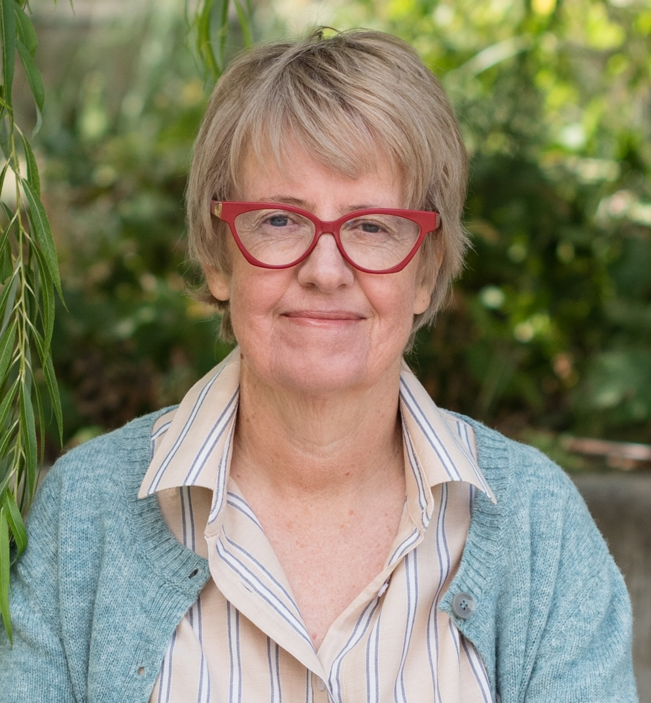

I'm a fellow traveller — my life has had a lot of phases, and the harder stretches have taught me a great deal. I know from my own experience how important it is to find someone you can talk to openly, and be truly heard. I don't claim to have your answers, but I aim to help you find your own.
For over a decade I taught Compassionate Communication — also known as NVC — working with individuals and organisations on how to listen deeply, express themselves clearly, and navigate conflict without shutting down. That work changed how I see almost everything, and it was a natural path into counselling. Working one-to-one, in sustained, unhurried sessions, felt like where I could do the most good.
Before that, I spent twenty years making factual television. It was a career built on curiosity about people — how much goes unsaid, what it takes for someone to open up. I didn't know it at the time, but it gave me a deep grounding in how people communicate — and how much can shift when someone really listens.
I have a Postgraduate Diploma in Integrative Counselling and Coaching and I've also trained in Internal Family Systems (IFS). I'm BACP registered and work within the Personal Consultancy Model — which means I can move between the depth of counselling and the forward focus of coaching, depending on what you need.

Qualifications & training
PGDip Integrative Counselling & CoachingUniversity of East London
Internal Family Systems (IFS)Level 2 trained practitioner
Compassionate Communication (NVC)Certified practitioner — 12 years' practice
BACP Registered MemberRegistration no. 419900